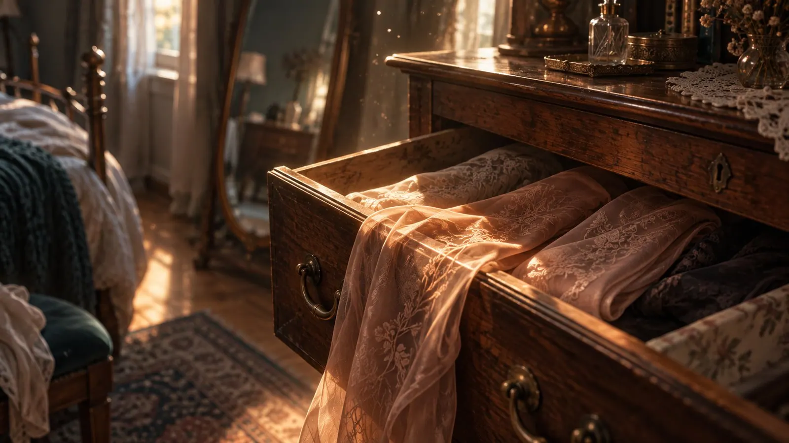

Being Trans, Part 1: The First Time in the Mirror
I was young.
I still remember exactly when my body started doing things nobody had talked to me about beforehand. My sex education went roughly like this: my grandparents found a porn magazine in my room, and the lesson drawn from it was that wanking makes you go blind. No conversation, no "that's normal at your age", just that one sentence, delivered like a weather forecast.
I didn't quite believe it, but I wasn't sure either. So I did a great deal of field research in the months that followed. Glasses did turn up eventually, and I'll leave open whether my grandparents would have counted that as belated proof. Blind I did not go. The shame took considerably longer than my eyes, because a sentence like that lies around in your head for decades gathering dust, until one day you mistake it for a piece of furniture.
It was the time when your body does whatever it wants anyway, and when you constantly feel you ought to apologize for it. Shame wasn't an exception in that house. It was standard equipment, like the wallpaper.
The Guest Room
I sometimes played in the guest room. It was one of those rooms every second household had back then: rarely used, always a little too tidy, smelling of shelf paper and old wood. A room waiting for someone to come and visit, looking slightly offended that so few people did.
In one of the drawers were nylon stockings. Not the everyday ones, the beautiful ones, with a pattern running over the instep. I picked them up out of curiosity. The fabric was unlike anything I knew: cool, smooth, almost liquid, and it ran through my fingers as though it were in a hurry. I held them for a moment and put them back, neatly, folded exactly as before. That was all that happened that day.
But it stuck, the way a song sticks when you've only heard two bars of it.

A Few Days Later
A few days later nobody was home. I remember how quiet the house was, and how loud everything else was instead: the clock in the hallway, the fridge, my own steps on the stairs, my heart.
I went into the guest room and opened the drawer. This time I didn't put the stockings straight back.
First I let them run through my fingers again, held them up to the light and watched the pattern shine through, a fine net of vines that darkened where the fabric folded over itself. I held them to my face. They smelled of the cupboard, of washing powder, and underneath of something foreign and grown-up I couldn't place.
And images started building in my head. Not clear ones, more like hunches of something I had no words for. I didn't know what I was actually picturing. I only knew that it excited me and that I didn't want to stop.
Then I wanted to put them on, and of course that went wrong.
I pulled one leg out of my joggers, sock after it, and tried to get in while standing, balancing on one leg with the other in the air, like a stork with ambitions. Anyone who has tried this knows how it ends. Nylon forgives no haste and certainly no impatience.
So I sat down on the edge of the bed. That there was a mirror there hadn't registered with me at all, I was far too busy getting the stocking over my foot.
And then it was on, and I started rolling it up my leg. That was the moment. The fabric settled centimeter by centimeter, cool at first, then warm, the fine vines stretching over my skin, and something inside me tipped over. It was the first time I had ever felt anything like it, and it was so big that it left me a little drunk.
I took off the rest of my things too, to put on the second one, and this time it went better, hand over knee, fabric over calf, slowly, because slowly had suddenly become the only thing I wanted.
And then I lifted my head and looked in the mirror.
What I had expected, I don't remember. What I saw was not a boy. I saw myself. I saw a woman, and I found her beautiful. For the first time in my life I felt sexy, and I had not a single word for it.
I started to move. Not much, just a step to the side, the weight shifted onto one leg, the hip going somewhere entirely on its own, somewhere it never went otherwise. I turned a little, looked over my shoulder, saw the line running from ankle to thigh and traced it with my hand, simply because I could. To this day I don't know how I knew how to do that. Nobody had shown me. My body just did it, as if it had been waiting for years for somebody to finally ask.
What came after that was wild, and it belongs to me.
That's the part I find hard to explain. It wasn't "oh, that looks pretty". It was recognition. As if someone had finally switched on the light in a room I had always lived in.
And then came the fear. Steps outside, a car, something, maybe nothing at all. I tore the stockings off so hastily that I nearly ruined them, stuffed them back into the drawer, pushed them under the others and went to my room, where I spent half an hour pretending to read while my heart was still in my throat. I don't think I turned a single page in that half hour.
The Explanation Came Later
That day I had no word at all for what had happened. I had no "fetish" and no "trans", I had a feeling and a drawer I had pushed shut again.
I kept experimenting, of course. Stockings again first, then at some point the lipstick from the bathroom cabinet, smudged with a finger and hastily rubbed off again. Powder, mascara, all in secret, all applied wrong, all wonderful. I looked like an accident in a paint factory and still thought I was magnificent, and honestly, that ratio of skill to enthusiasm only shifted years later.
The word fetish came later, and when it came it felt like a release. A fetish was thinkable. A fetish was something men have, grubby perhaps, but accounted for. Above all it let me pass as a man, which was practical, since everyone took me for one anyway. I never actually felt male. I played it, more or less well, the way you play a part somebody handed you without asking whether you ever wanted to be an actor. A man with a preference was a problem I could live with. A woman living inside a man's life wasn't a problem, that would have been a catastrophe.
I'm not angry at the person who built that explanation. He worked with what he had, and he protected me. You don't invent a truth there isn't a single word for in your world.
The Bedroom Years
From then on the whole thing had a place, and that place was the bed.
I bought deliberately: stockings, lace, silk, later latex, then skirts, heels, corsets. I learned what matters. How silk flows over skin while satin glides across it. How latex is cold first, then clings, then becomes a second skin and reminds you at every single point that you have a body. How a corset reroutes your breathing, so you breathe shallower and more consciously and sit a little straighter without meaning to.
At some point I had more stockings than socks, and I had plenty of socks. I could justify all of it, because it belonged to sex, and if the person I was with was into it, it was even welcome.
And I liked sex. I wanted it long and unhurried, I wanted hours and not minutes, and in those hours I felt more alive than in the whole rest of the week.
At some point this sentence fell for the first time: "Be my good girl."
That tingled. Not the way a compliment tingles, but deeper, somewhere I had no address for back then. It was a sentence that meant me, and meant me properly. Anal sex was part of my sexuality, I enjoyed it, and in it I was more and more often exactly that: the good girl. In those hours I wasn't a man wearing something feminine. In those hours I was her, and everyone in the room agreed on it.
Only it applied exclusively there. As soon as the lights came on, the things went back into the drawer and I became again the person everyone took me for. That's the deal many of us make with ourselves for years: you may be her, but only at night, only naked, only when it's sexy.
And then there was the other thing, the one hardly anyone talks about. There's that moment after the orgasm when the arousal drops like a curtain, and behind it your upbringing is already standing there with its arms crossed. You should be ashamed. You're perverted. You freak.
It's remarkable what voice a thing like that speaks in. Not a foreign one, my own, and yet not a single word of it comes from me. That's the cruel part about shame: it gets fitted like a tooth, and eventually you bite down with it yourself.
I'd heard the word freak often enough before, by the way. At school I was the kid interested in the wrong things, friends with the ones who fit into no clique, and happiest on their own. That wasn't only down to the others. I had learned early that trust is expensive, so I didn't hand it out in the first place.
Anyone who learned as a child that they themselves are the mistake doesn't need someone else to say it afterwards. They do it themselves, every time the lights come on.
It works for quite a while. And then it stops working.
What Was Missing
It started slowly, the way water runs into a cellar you rarely go down to.
I got depressed. Not the dramatic kind, the grey kind: days like hold music, evenings when nothing was any fun, the dull feeling that something isn't right without being able to say what. And then the crying fits. Out of a clear sky, in the middle of an ordinary day, with no reason I could produce for anyone. You sit there, your face wet, looking for something you could show the others, and you don't find it.
So I compensated, the way people do. I worked. I found myself elaborate hobbies, things that eat time, take up attention and are wonderfully suited to leaving you not one quiet moment. If you're busy, you don't have to listen.
Drugs and alcohol weren't available to me, because I don't touch either. That sounds sensible, and it is. It also means I could never fill the hole with something fast-acting. I had to sit it out sober, every evening, and every year it got harder to find enough to do to cover it up.
There were dark thoughts in there too. When the despair is big enough and the answer far enough away, you eventually start looking for an exit. I'm writing that down because it belongs to the story, and because many of us know that point, even if hardly anyone talks about it.
What kept me here wasn't heroic. I was too much of a coward. I was too curious about what's on the next page. And somewhere in me sat that stubborn little optimist insisting it gets better if you just hold on long enough.
He was right, that optimist. He just hadn't mentioned how long.
For a while that was enough. Then it wasn't. The gap grew bigger than everything I could stuff into it, and I ran out of furniture to put in front of it.
The Question
And then someone asked me: "Wouldn't you rather be a woman? You move like one. You talk like one."
It wasn't an accusation and it wasn't a dig. It was a question, asked as casually as you'd ask whether someone might be cold.
And because I just sat there staring, the rest followed: "You sit like that. You cross your legs, you make yourself small, you don't take the space that's yours. You talk with your hands. You listen, really listen, and then you ask questions instead of putting your own story on top. You apologize for things no bloke would apologize for. And when you laugh, you hold it back, as if it had come out too loud."
And then came the part that got closest, because it came from the room where I usually felt safe: "When we have sex, I see a woman. You behave like one, you're loving and a slut at the same time, completely free, no shame, none of that armour. And I can see how good it is for you."
Then the sentence that took longest to land: "I can see you holding yourself together the whole time. Why only in bed?"
I didn't answer right away. I took the sentence with me the way you take a note you mean to read later, and it lay around inside me for weeks, looking at me at night.
Because it was true. I was always the empathetic one, the emotional one, the one who noticed someone was struggling before they noticed it themselves. I had never read that as a hint, only as a character trait that happened not to match my body.
The Second Mirror
The second important mirror of my life managed without stockings.
I stood in front of it at some point, cried out, my face red and blotchy, my eyes swollen, a tissue in my hand that had long since done its duty. And I no longer saw what I had seen for half my life.
I didn't see a man there. I saw a woman, squeezed into men's clothes, and she was completely done in.
That was the moment it tipped, because I knew that woman. She had been in the guest room. She had been there in every night when someone said "good girl". She had been there the whole time. I had just wiped her away each time like condensation on a mirror, and like condensation she came back every time.
Standing in front of a mirror crying because you finally recognize yourself is a strange kind of relief. It hurts and takes weight off at the same time.
And because this all sounds like ancient history now: it isn't long ago. I only really opened up two years ago. Between the guest room and that mirror lies an entire life, and between that mirror and the sentence you're reading right now lie only a couple of years. It's never too late, and anyone who tells you otherwise hasn't tried it themselves.
More Room
After that I gave her more room. Not all at once, I didn't drive to work as Valerie the next morning. It was more of a slow moving-in, the way you move into a flat you'd only been subletting: first a shelf, then a cupboard, then pictures on the wall.
A little more of her in everyday life. A little less costume in my head. The first day something of her was allowed out into the world and the world simply carried on. The first time someone said "she" without it having been arranged, and how long that single word echoed inside me.
And it worked. The sadness got less. The crying fits became rarer and eventually turned into normal crying, with a reason, as it should be. The questions got quieter, the doubts too, and in their place came something I had barely known before: simply feeling and simply doing, without someone permanently taking minutes in the background.
It's not that everything was suddenly fine. But I stopped working against myself, and it's astonishing how much strength is freed up when that one fight falls away. It was rather like someone taking off a rucksack I'd forgotten I was wearing, after years of wondering why stairs were so exhausting.
What Really Happened Back Then
Today I know what I saw in that first mirror, and it wasn't the stockings.
Stockings make nobody a woman. They're nylon, a bit of pattern and a price tag. But if a woman already lives inside a person, they work like an amplifier. They make something audible that was there all along and had only been speaking too quietly.
This Is My Story, Not a Test Sheet
And because this is starting to sound nicely educational, let me say it straight away: this isn't a guide you can use to work out whether you're trans.
It's my story. For other people it starts somewhere else, takes longer, goes faster, looks completely different, or happens at sixty. There's no schedule, no checklist and no moment where a bell rings and somebody calls out: "Congratulations, you're a woman, please proceed to counter three."
And this matters: nobody is trans just because they like feminine things.
That needs saying, because the fashion world really doesn't make it easy for men. On one side of the shop there are fabrics, cuts, colors, lace, silk, velvet, twelve kinds of black and shoes for every mood. On the other side there's a shirt, trousers, a jumper, and on a wild day a daring check. Skincare is the same: for women a whole shelf of things that smell good and come with little rituals, for men one bottle labelled "3 in 1" that smells like someone crossed a pine tree with a car dealership.
So if a man likes wearing silk, shaves his legs, enjoys nail polish or loves an elaborate skincare routine, that means he has taste and knows what feels good. It doesn't mean he's a woman. It doesn't even mean he has to think about it.
The difference isn't in the fabric, it's in what stays when you take it off again. With me something stayed. It stayed for decades.
What Has Changed Since
One thing gives me courage when I look back: the world of today isn't the world of back then.
When I stood in that guest room there was no word I could have searched for and nobody I could have asked. Today there are people growing up who know at fourteen what trans means, who know others in the same position, and who don't need thirty years to build themselves a language. There are doctors, there are groups, there are laws, there are people who simply say "okay" and carry on talking.
That doesn't mean it's easy. There are still walls in plenty of heads, some of them freshly painted. There are looks, there are stupid comments, there are people who think this is a trend and think themselves brave, when really they're just loud. And with eight billion opinions it takes time for anything to move. Societies have the turning circle of a container ship.
But they do turn. Slowly, under protest, with a lot of horn blowing, and they turn anyway.
I want a future where coming out isn't a jump off a cliff but good news. Where someone starting their transition gets celebrated like someone getting married or building a house, with cake and embarrassing speeches. Where nobody thinks in two boxes any more, because we've long since noticed that the world comes in millions of colors and the loveliest parts are the transitions in between.
In the end we're all just people looking for our place. Some find it early, some late, some only after half a life spent in a room they never wanted to live in.
For Those Standing There Right Now
If you're reading this and thinking of a drawer you had too, there are two things I want to tell you.
First: that moment in front of the mirror is not proof and not a diagnosis. Some people stand there and are simply delighted, and that's the end of it. That's completely fine too, and it makes you nothing you don't want to be.
Second: if you saw yourself, then you saw yourself. You don't have to prove it to anyone, you don't have to categorize it straight away, and you don't have to find a name for it that doesn't fit. You're allowed to just know it for now.
Part 2 is about the words and about how to treat each other when you're unsure. Part 3 is about strengthening that feeling of being a woman in everyday life, even when your body isn't playing along yet.
I put the stockings back in the drawer that day and pushed the drawer shut. It took a long time before I opened it again, and even longer before I understood that there was never a secret in there. There was me. 💜
I'm Valerie, i'm a woman...
First published on X. Replies and conversation live there.